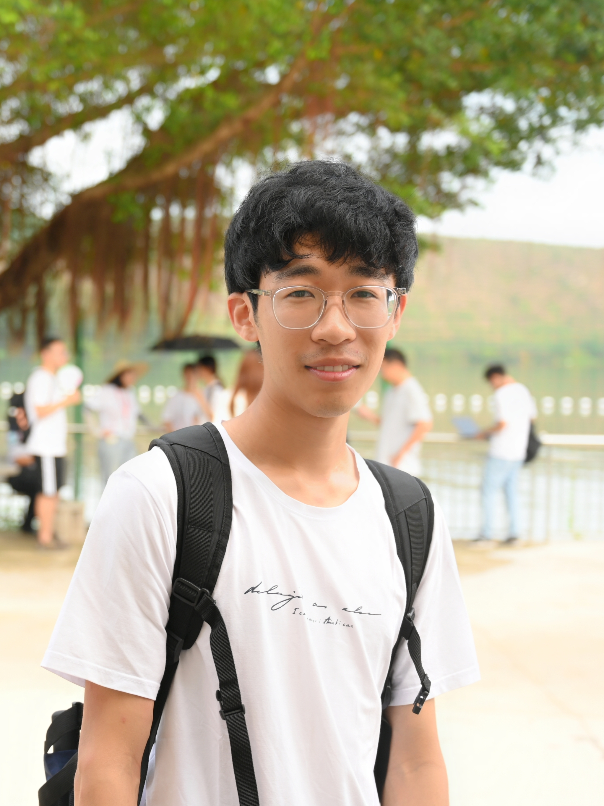

|
Duan, Qihan (段淇瀚)
|
 |
Undergraduate Student,
School of Electronic Information and Electrical Engineering
Shanghai Jiao Tong University(SJTU)
Shanghai, China
E-mail: qhduan@qq.com
|
About me
I am currently a junior undergraduate student majoring in Information
Security at Shanghai Jiao Tong University, expecting to get my B.E. degree in June, 2023.
Research
My research interests include:
Current work
Recent publications
Education
B.E., Information Security, Shanghai Jiao Tong University, 06.2023(expected)
Main Courses: Principles of Database, Compiler Principles, Computer Organization and Architecture, Computer Communication and Network.
Competitions and awards
Zhiyuan Honors Scholarship of Shanghai Jiao Tong University, 2019&2020&2021
United Automotive Electronic Scholarship, 10 2020 The SJTU Excellence Scholarship: Class B, 10.2020
The SJTU Excellence Scholarship: Class C, 10.2021
Ministry of Education - Huawei "Intelligent Base" Industry-Education Integration Collaborative Education Base Scholarship , 10.2021
The SJTU Merit Student: 10.2020
Advanced Social Practice Individual, Shanghai Jiao Tong University, 2020&2021
Activities
Editor-in-chief, official micro-blog of Shanghai Jiao Tong University, 09.2019-05.2022 Section chief, Section of social practice at School of Electronic Information and Electrical Engineering, SJTU, 03.2020-05.2022
A brief cv.
|